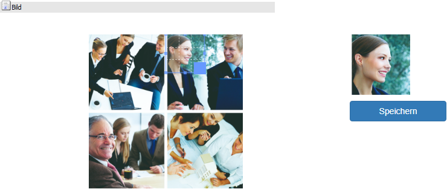
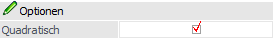
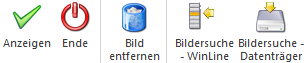

In diversen Stammdatenprogrammen (z.B. dem Personenkontenstamm oder dem Artikelstamm) steht der Button "Bildersuche" zur Verfügung. Durch Anwahl des Buttons wird das Programm "Bildersuche" geöffnet, in welchem zunächst folgende Funktionen zur Verfügung stehen:
ü Suche von Bildern in der Systemdatenbank
ü Suche von Bildern auf der Festplatte
Nach der Auswahl eines Bildes kann dieses beschnitten und an das Ausgangsprogramm übergeben werden.
Bild

Nach der Auswahl einer Grafik (siehe Button "Bildersuche - WinLine" bzw. "Bildersuche - Datenträger") kann diese zugeschnitten werden, wobei der Bereich per Raster definiert wird. Die Vorschau ist jederzeit im rechten Bereich ersichtlich.
Durch Anwahl des Buttons "Speichern" wird die Grafik ausgeschnitten und an das Ausgangsprogramm übergeben.
Optionen

Ø Quadratisch
Mit Hilfe dieser Option kann definiert werden, ob ein Bild quadratisch oder nicht quadratisch ausgeschnitten werden soll.
Buttons

Ø Anzeigen
Durch Anwahl des Buttons "Ok" bzw. der Taste F5 wird die aktuelle Bilderanzeige geleert.
Ø Ende
Bei Anwahl des Buttons "Ende" bzw. der Taste ESC wird das Fenster geschlossen und keine Grafik an das Ausgangsprogramm übergeben.
Ø Bild entfernen
Bei Anwahl des Buttons "Bild entfernen" wird die Zuordnung zu dem Bild, welche bereits im Ausgangsprogramm zugeordnet wurde, gelöscht.
Ø Bildersuche - WinLine
Durch Anwahl des Buttons wird das Programm "Bilder in Datenbank" geöffnet, über welches eine Grafik ausgewählt werden kann. Nach Auswahl der Grafik steht diese im Beschneidungsmodus zur Verfügung.
Ø Bildersuche - Datenträger
Mit Hilfe dieses Buttons wird der Öffnen-Dialog von Windows geöffnet, über welchen eine Grafik ausgewählt werden kann. Nach Auswahl der Grafik steht diese im Beschneidungsmodus zur Verfügung.